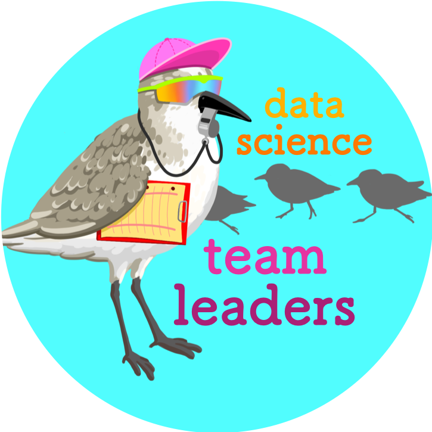
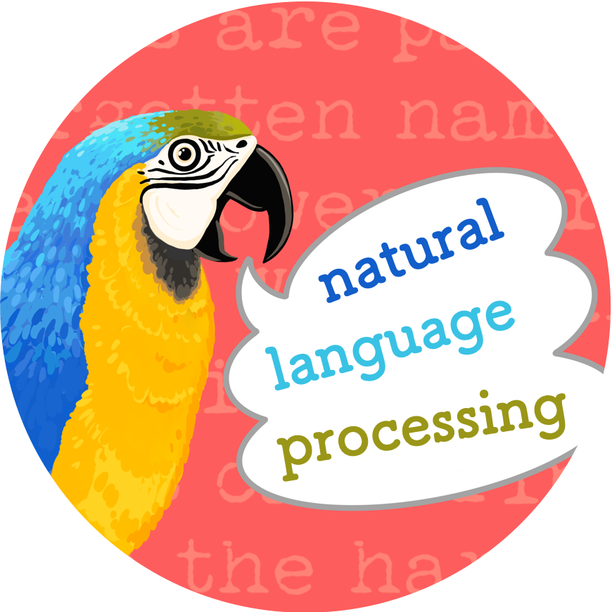
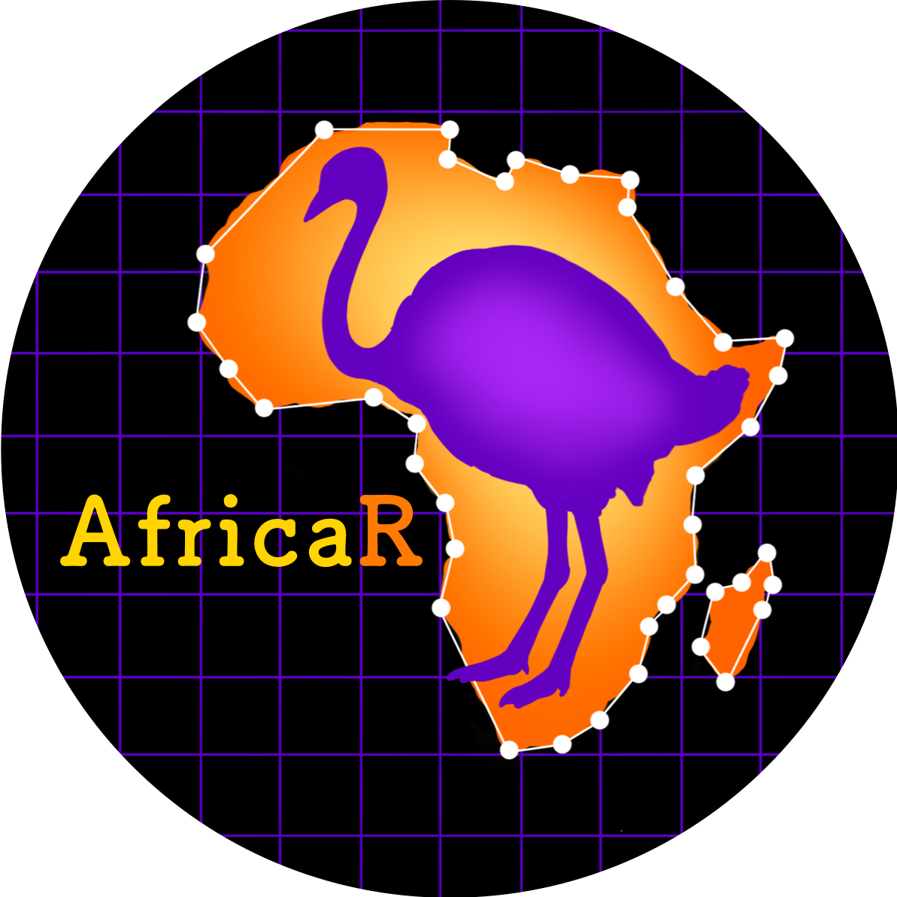
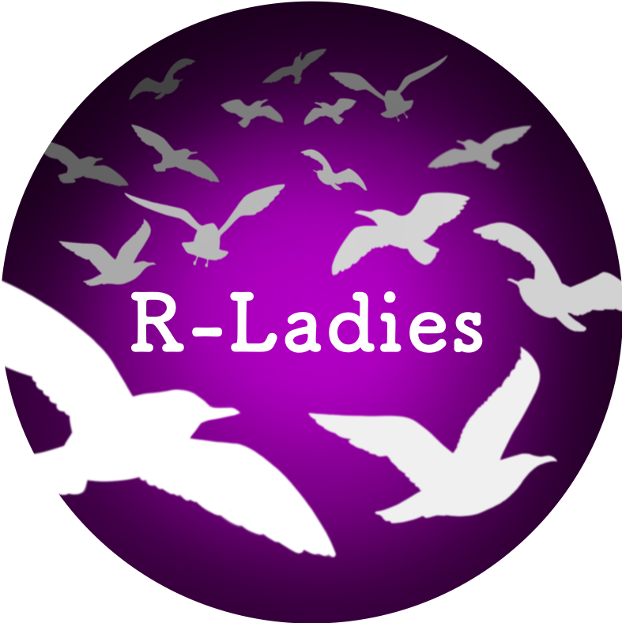

By Allison Horst, Curtis Kephardt, and Yanina Bella
Cross-posted with YANINA LINK HERE
The “Birds of a Feather” (BoF) sessions at the 2020 RStudio Conference were a place where R-users with similar backgrounds, interests, and aspirations could connect in a low-stress social setting. In other words - these sessions let “birds of a feather flock together.” Building on the 2019 conference swag, we rolled out a bunch of new BoF buttons for rstudio::conf 2020.
Here we’ll share the process for how some of the designs were created, including several that truly involved a flock of contributors (names for groups of birds are from Bird Spot).
Featuring 80’s beach volleyball sandpiper coach leading a team of R users:

Fun fact: a group of sandpipers can be called a fling or a bind.
Featuring a wordy bird - a parrot!

Fun facts: Groups of parrots are sometimes called companies, a prattles, or pandemoniums. Also, parrots are the only birds that can use their feet (like hands) to serve themselves food. And one more thing - the text in the background of this design is a line from Patrick Rothfuss’ The Name of the Wind (one of artist @allison_horst’s favorite books).
…checking flight routes before setting off on their next delivery:

Fun fact: A group of pigeons is sometimes called a kit or a loft.
Several of the designs - especially R-Latin America, R-Africa, and R-Ladies - depended on recommendations, insights, and feedback from multiple members of those communities. Here, we’ll highlight elements and contributors of several community-driven designs.

The R-Latin America BoF button was truly a collaborative effort, with every detail - from bird to branch - created based on ideas and input from R-Latin America community members. Massive thanks to the R-Latin America design contributors (and thank you to @yabellini for providing this compiled list & text):
Laura Ación, Marcela Alfaro, Yanina Bellini, Juliana Benitez (expert ornithologist!), Elio Campitelli, Paola Corrales, Florencia D’Andrea, Natalia da Silva, Priscilla Minotti; Riva Quiroga, Vilma Romero, Gabriela Sandoval, Heather Turner; and the LatinR Conference Community!
These contributors are from Argentina, Chile, Costa Rica, Perú, Uruguay and the UK, and belong to R-Ladies Chapters and R User Groups in these countries. The final picture was chosen for the vote of the broader LatinR Conference Community.
Here are some insights into the final design elements:

The AfricaR BoF button was designed with suggestions and feedback from AfricaR community leaders Shelmith Kariuki and Dennis Irorere.
Some design elements for the AfricaR button:

The R-Ladies BoF button started with an idea from R-Ladies founder Gabriela de Quiroz, who suggested a gull as a nod to both R-Ladies’ beginnings in San Francisco, and to this year’s conference location!
With feedback from Gabriela and the R-Ladies leadership team including Laura Ación and Erin LeDell, and RStudio’s Mine Çetinkaya-Rundel, the final design features the following elements:
This year, there were 24(!) different Birds of a Feather buttons. When we put them all together, here’s the flock for the 2020 conference (with more planned for next year):

We hope that everyone can find a bird that they relate to, and we look forward to meeting many of you at future RStudio Conference BoF sessions!
So, just one final question: Which bird(s) are you?